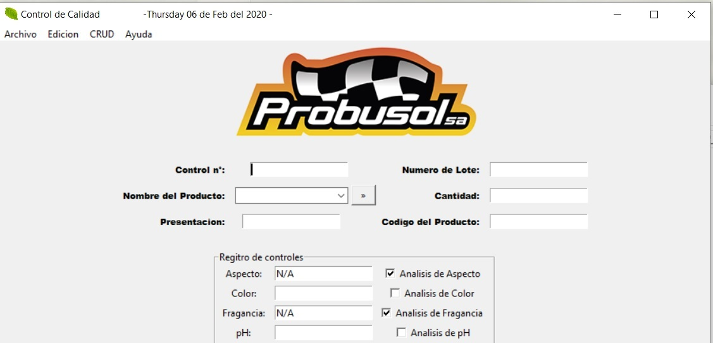
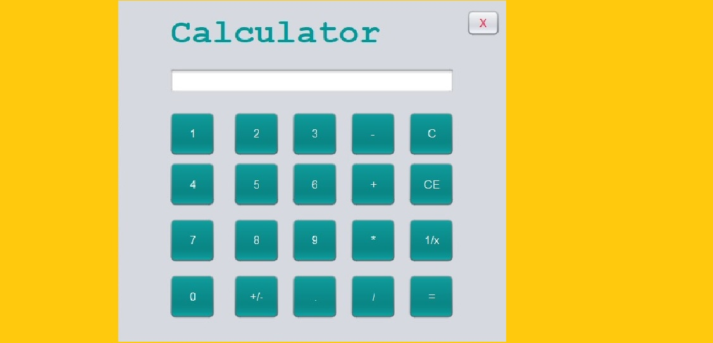
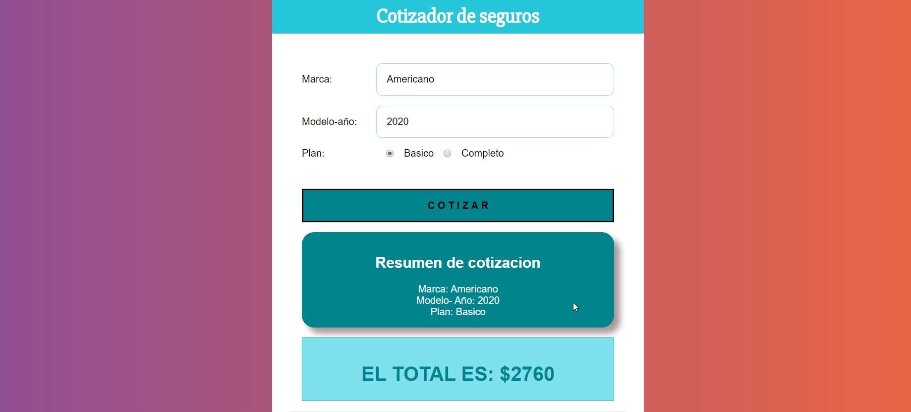
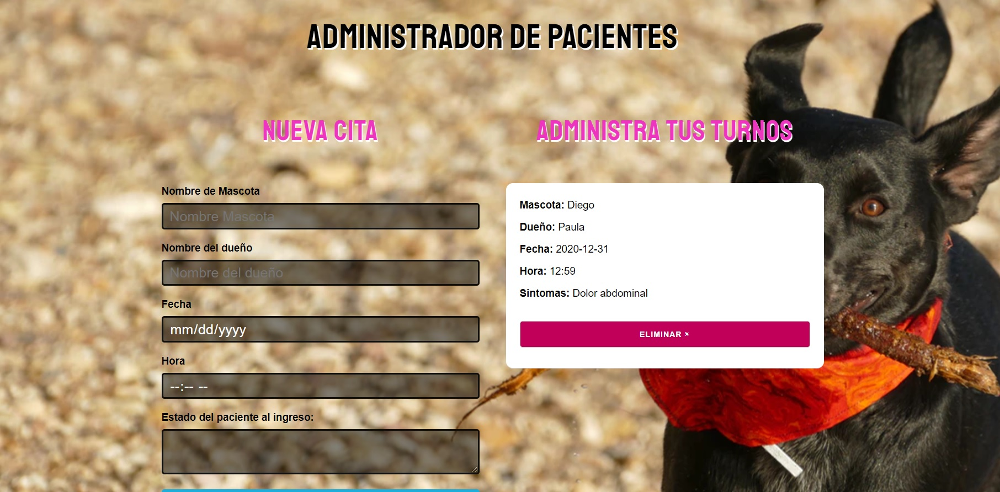
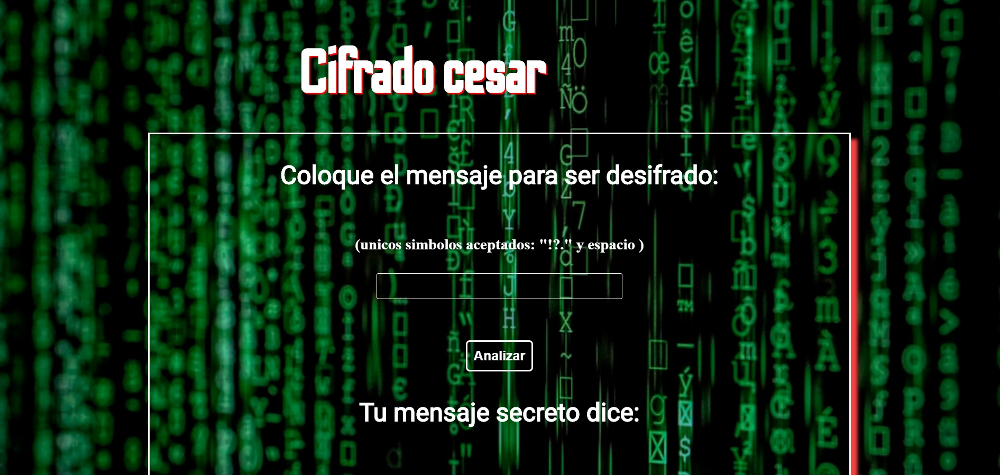
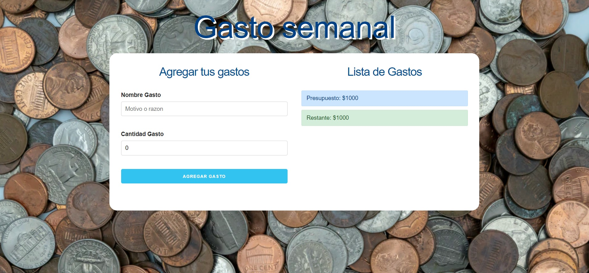
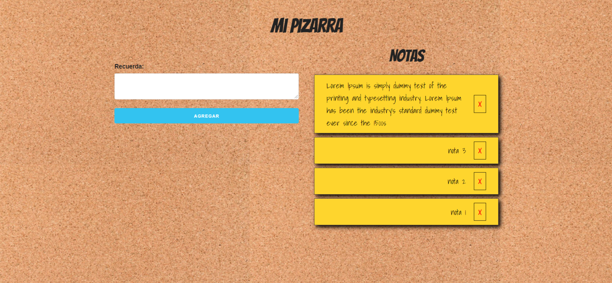
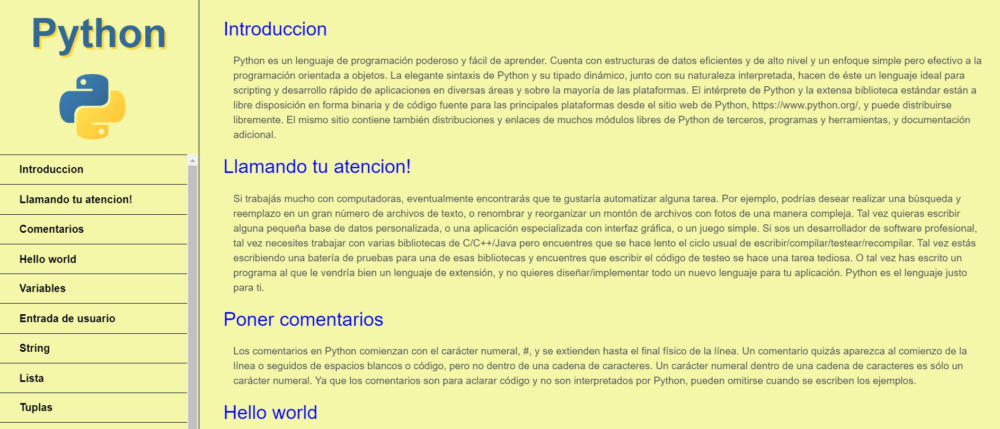
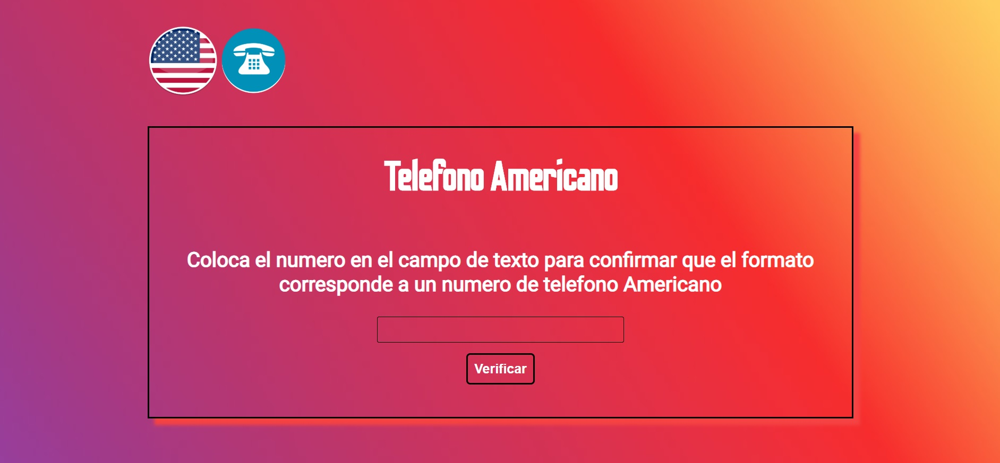
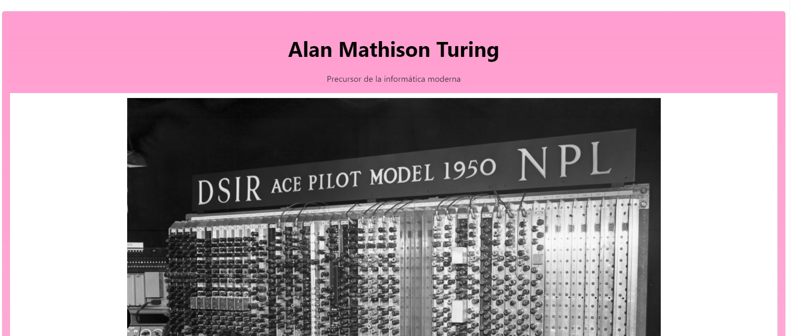

Control de Calidad
Aplicacion para realizar los controles de calidad del laboratorio de Prousol S.A (C.R.U.D)
• Python
Calculadora
Calculadora basica con interfaz grafica
• Java - NetBeans
Quote Generator

Genera una frase celebre con su autor apretando un boton
•Html •Css •Js
Cotizador de Seguro
Aplicacion para cotizar el seguro de un vehiculo dependiendo de su origen, modelo y tipo de plan
•React Js
Administrador de turnos
Aplicacion para administrar turnos con la informacion necesaria
•React Js
Cifrado Cesar
Aplicacion para decifrar mensajes en codigo rot-13
•Html •Css •Js
Administrador de presupuesto
Aplicacion para administrar el presupuesto y los gastos
• React Js
Olimpia Bike Store

Wed ideal para un local comercial, aplicando la libreria Fullpage de Js
•Html •Css •Js
Pizarra de Notas
Pizarra para agregar, guardar y borrar notas personales de Local Storage
•Html •Css •Js
Python Resume
Resumen de lo mas basico e importante de Python con un menu lateral
•Html •Css
Telefono de EEUU
Aplicacion para determinar si un numero de telefono tiene el formato de un telefono de EEUU
•Html •Css •Js
Tribute Page
Pagina tributo a Alan Turing
•Html •Css